Insecticides
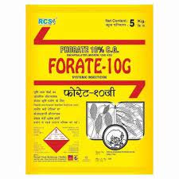 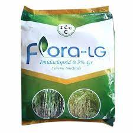 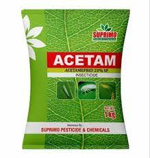 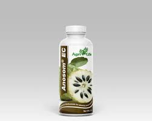
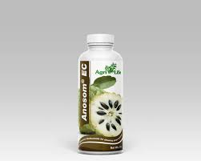
Learn about insecticides and their role in controlling insect pests in agriculture.
Fungicides
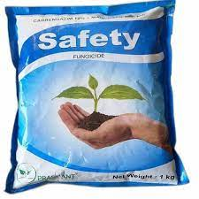 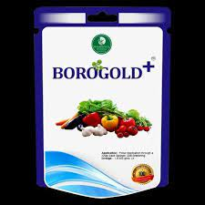 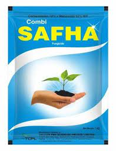 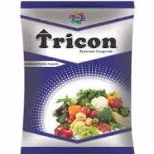 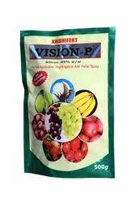Discover fungicides and how they are used to prevent and control fungal diseases in crops.
Rodenticides
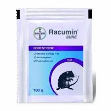 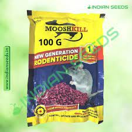 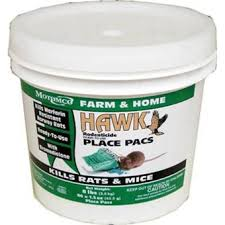 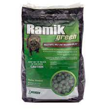 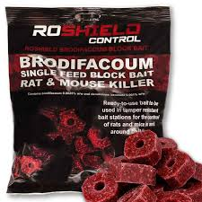Learn about rodenticides used for rodent control in agricultural settings.
Herbicides
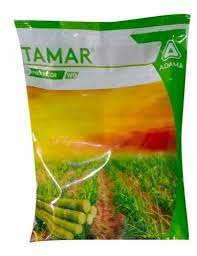 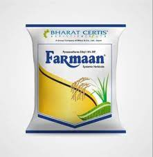 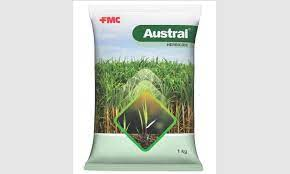 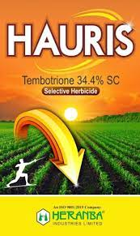Explore herbicides used to control weeds and unwanted plants in farming.
Rodenticides
Learn about rodenticides used for rodent control in agricultural settings.
Contact Us
If you have any questions or inquiries, feel free to contact us:
Email: info@agripesticides.comPhone: +1234567890